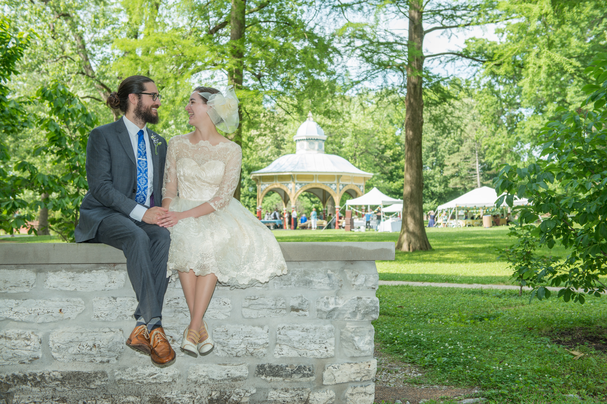

Thank you to everyone who came to the St. Louis party! We had such a wonderful time celebrating with you all.
We really had fun curating what we shared on party day. Here's where you can find all these things in St. Louis, whenever you like!
It all happened...